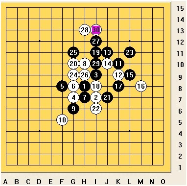
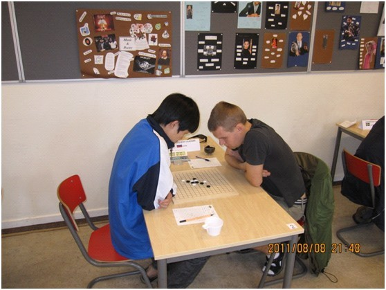

混混2011世锦赛棋评（续）
首页
≮炫飞☆棋社≯
#1 混混2011世锦赛棋评（续） 作者：清缘 发表时间：2011-8-14 11:29:41

第八局，白败Sushkov V．（苏切科夫）

犀利了，对上上届冠军。
由于上午败了，中午睡了90分钟打算下午再接再厉，精神充沛，这个时候感觉什么都算得无比清楚。记得Sushkov开过蒲月6打，我猜他会换的，所以开了，看看他能怎么攻。可是临场又改变主意了，
#2 Re:混混2011世锦赛棋评（续） 作者：小元 发表时间：2011-8-14 12:17:24
恭喜楼主
#3 Re:混混2011世锦赛棋评（续） 作者：黑白之巅 发表时间：2011-8-14 16:04:48
好文自然不能错过，果断转贴到连珠吧
#4 Re:混混2011世锦赛棋评（续） 作者：业余九级菜手 发表时间：2011-8-14 18:29:23
这一局对曹大神的冠军之路影响甚大，必须认真对待。
混混比较幽默。
顶！

#5 Re:混混2011世锦赛棋评（续） 作者：炫飞水月 发表时间：2011-8-14 20:29:42
恭喜混混，你是好样的，相信不久的将来冠军非你莫属
#6 Re:混混2011世锦赛棋评（续） 作者：忧郁的双眼 发表时间：2011-8-14 20:49:25
混混写得很有爱
#7 Re:混混2011世锦赛棋评（续） 作者：五连达人 发表时间：2011-8-14 22:29:36

#8 Re:混混2011世锦赛棋评（续） 作者：黄药师 发表时间：2011-8-14 22:33:36
笑容相当的阳光啊！！！！
#9 Re:混混2011世锦赛棋评（续） 作者：第五象限 发表时间：2011-8-14 22:47:34
在对曹大神的冠军之路影响甚大的对局中临场变招，混混着实太猛了！
#10 Re:Re:混混2011世锦赛棋评（续） 作者：伊依 发表时间：2011-8-14 23:27:50
爷是混粉混混太有才了哈哈
#11 Re:混混2011世锦赛棋评（续） 作者：坏小子 发表时间：2011-8-15 21:50:24
棋评也玩续啊，不过确实物有所值，顶
#12 Re:混混2011世锦赛棋评（续） 作者：雨一直下 发表时间：2011-8-16 16:27:21
再顶，虽然混混让俺输了不少金币，几乎倾家荡产（还好俺最后一轮翻盘，又赢回来了），不过还是要说一下，混混很牛，而且性格很爽朗，很可爱一个大男孩，文如其人，赞！顺便再提一下，俺也是混粉
#13 Re:混混2011世锦赛棋评（续） 作者：lfzxdh 发表时间：2011-8-16 20:17:29
必须顶一下！！
#14 Re:混混2011世锦赛棋评（续） 作者：百无禁忌 发表时间：2011-8-16 21:41:47
顶